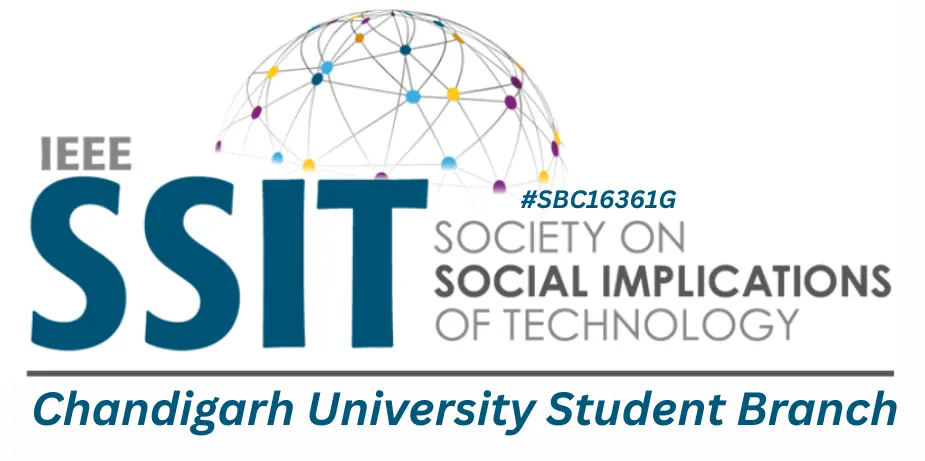
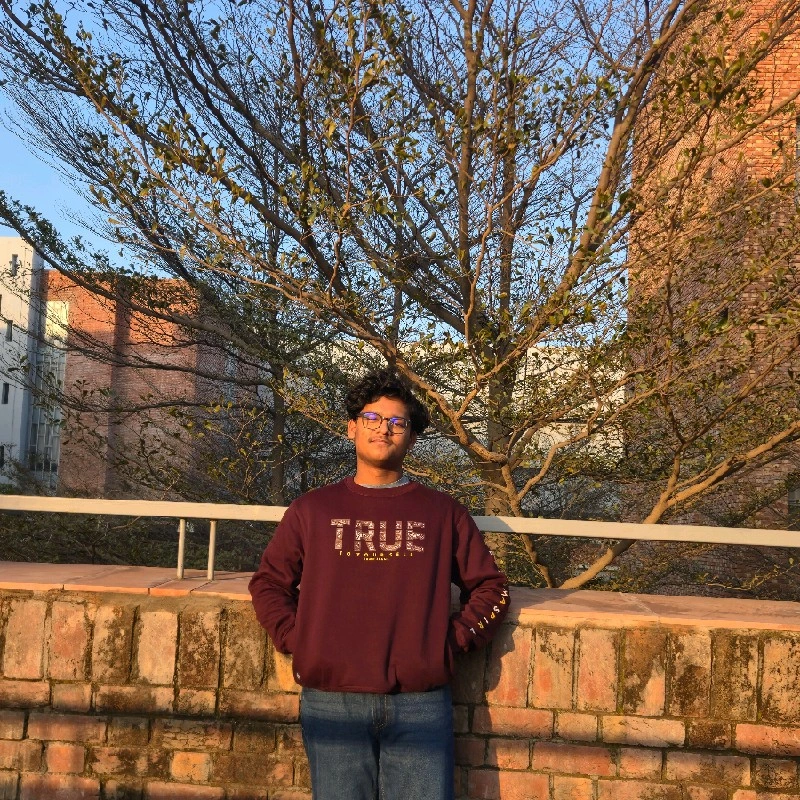

Chandigarh University's IEEE SSIT Chapter — fostering innovation,
ethics, and the human impact of technology.
The IEEE Society on Social Implications of Technology (SSIT) addresses the relationship between technology and society.
IEEE SSIT is one of IEEE's technical societies dedicated to understanding and addressing the social, ethical, and policy dimensions of technology. Founded with a mission to ensure that technological progress benefits humanity, SSIT brings together engineers, scientists, policymakers, and social scientists worldwide.
Our chapter at Chandigarh University carries this global mission forward — organizing talks, workshops, hackathons, and policy discussions that connect students with the broader societal implications of the technologies they build.
One of Punjab's most active IEEE student branches, right at the heart of Chandigarh University.
The Chandigarh University IEEE Student Branch is one of the largest and most active student branches in Region 10. It serves thousands of students across engineering, computer science, and applied sciences.
The branch hosts multiple IEEE technical society chapters including SSIT, CS, ComSoc, and more — providing students exposure to cutting-edge technology domains and professional networking.
Recognized for excellence in student activities, technical events, and community outreach. Members have gone on to lead research, startups, and policy initiatives globally.
Becoming a member opens doors to global IEEE network, exclusive workshops, research opportunities, and a community of like-minded peers passionate about technology and society.
Workshops, seminars, hackathons, and more — all designed to connect technology with society.
IEEE SSIT Inaugural Event — celebrating the launch of our chapter with talks, networking, and vision for the future.
Register NowAn exclusive empowerment event celebrating women in STEM — featuring leadership talks, networking, and inspiring success stories.
The passionate student leaders driving IEEE SSIT CU Chapter forward.
